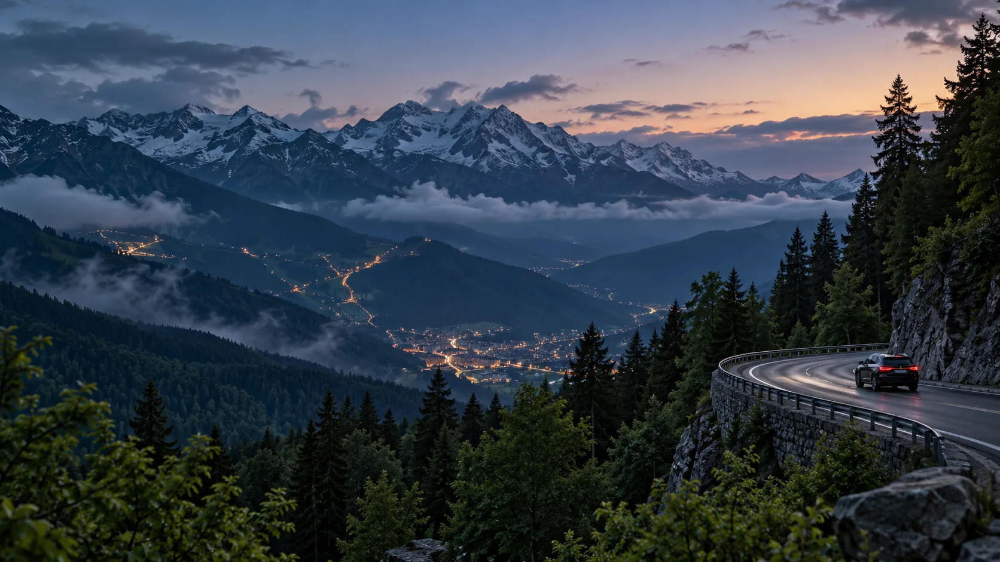

Красная Поляна
Горный курорт и видовые точки. План выезда зависит от сезона и погоды.
Официальный источник
МАРШРУТ / ГОРЫ
День, для которого лучше оставить запас времени. Подъемы, панорамы и остановки подбираем к погоде и работе канатных дорог.
ПО ПУТИ
Горный курорт и видовые точки. План выезда зависит от сезона и погоды.
Официальный источникХудожественная видеосцена маршрута. Фактические остановки и дорогу согласуем перед поездкой.

Главное фото: Художественный образ гор, созданный для концепции поездки. Состав и доступность маршрута проверяем перед поездкой.